Consider the breadth-first search to apply on the directed graph
given in the Figure 22.2(a). In the breadth-first search,  value of a
vertex represents the predecessor of that node and
value of a
vertex represents the predecessor of that node and  value of a
vertex represents the distance of that node from the source.
value of a
vertex represents the distance of that node from the source.
• Here, for every vertex , the
predecessor or value of
, the
predecessor or value of
 is
stored in the attribute.
is
stored in the attribute.
• If or has not been
discovered, then is set to
NIL.
• The distance from the source to a vertexis stored in
the attribute .
.
Now, consider the following figure 22.2(a) to run the breadth-first search on it.
Here,  consists the
set of GREY vertices.
consists the
set of GREY vertices.
Step 1:
Start with the vertex 3 as the source. So, set value of the
vertex 3 to NIL and the value of is zero.
Place the vertex 3 at the tail of the queue Q.
Hence, consists
vertex 3.
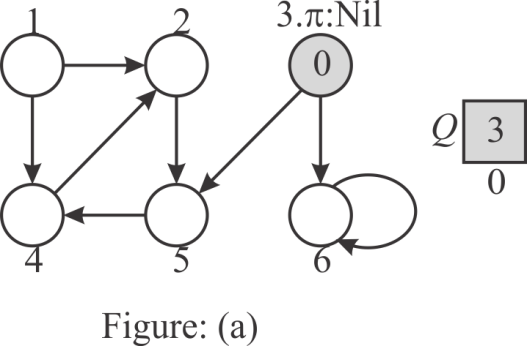
Step 2:
Since 3 is the head of the queue, insert the next adjacent nodes
of 3(5,6) into the Q and set the values of
the vertex 5 and vertex 6 to 3. The distance of vertex 5 (5.d) and
vertex 6(6.d) from the source is 1. Remove 3 from the Q.
Hence, consists the
GREY vertices 5 and 6.
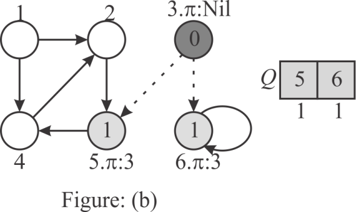
Step 3:
Now, the head of the queue is 5. Therefore insert the adjacent
vertices of 5(4) into Q and set the value of the
vertex 4 to 5. The distance of vertex 4(4.d) is 2. Remove the
vertex 5 from the Q.
Hence, consists the
GREY vertices 6 and 4.
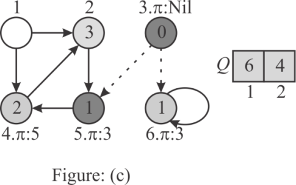
Step 4:
Here, the head of the queue is vertex 6. But, there are no
adjacent vertexes to 6 except itself. Since the vertex 6 is already
visited, remove 6 from the Q .Hence, consists
only the vertex 4.
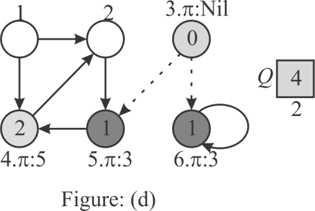
Step 5:
Now, head of the queue is vertex 4. Thus, insert the adjacent
vertexes of vertex 4(2) into Q and set the value of the
vertex 2 to 4 and the distance of 2(2.d) as 3. Remove the vertex 4
from the Q. Hence, consists the
GREY vertex 2 only.
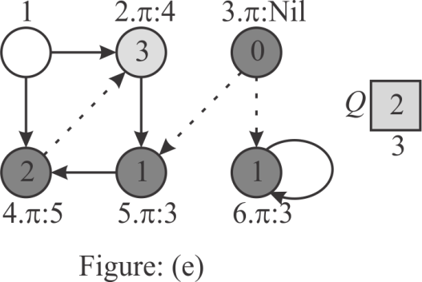
Step 6:
Here, the head of the queue is 2 and its successor is 5. Since
vertex 5 is already visited and there are no vertexes to process,
remove the vertex 2 from the Q. set the value of the
vertex 1 to Nil, because the predecessor of vertex 1 is not
defined.
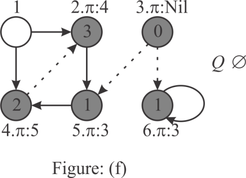
Hence, after running the bread-first search on the given graph,
the values and
values of
each vertex are as follows:
|
Node |
|
|
|
3 |
NIL |
0 |
|
5 |
3 |
1 |
|
6 |
3 |
1 |
|
4 |
5 |
2 |
|
2 |
4 |
3 |
|
1 |
NIL |
|
In the above table, the distance of node 1 from source is
 ,because
there is no path exists from any vertex to vertex 1.
,because
there is no path exists from any vertex to vertex 1.
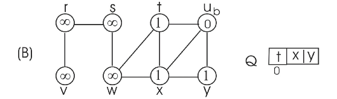
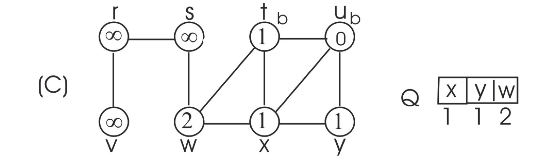
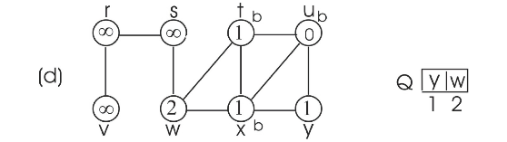
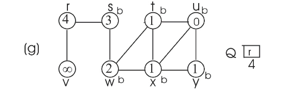
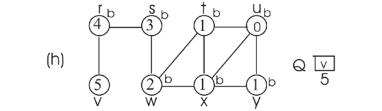
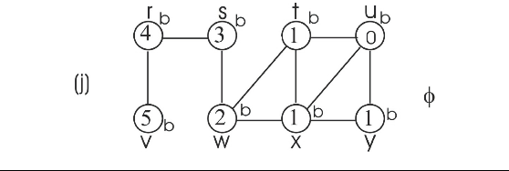
Consider the BFS procedure discussed in the textbook. In this procedure, every vertex is initialized with the color WHITE.
• After initializing, the color of the node changed to GRAY when the node is once visited or traversed and en-queued.
• At the end, when these vertex will be de-queued and each neighbor vertex is visited then the color of these vertices will be set to BLACK.
• So, from the given algorithm, it can be said that the color of a given node retain it color GRAY during a period, which ends from the point when these vertices are en-queued to the point when it is de-queued, followed by the step to traverse each neighbor’s vertex.
Therefore, a vertex consists the GRAY color, it means these vertices exists in the queue.
Now, consider the Line 5 and 14, which are used to set the color of the vertex to GRAY, should be removed, in order to use a single bit to store each vertex color.
• In other words, no such lines exists in the entire BFS procedure that distinguish BLACK from GRAY.
• The BFS procedure only checks either it is non-WHITE or WHITE, which shows that there is no meaning to have two colors to represent ‘visited’ vertices.
• Therefore, BFS procedure will produce the same result if the lines 5 and 14 of the BFS procedure are removed.
Hence, a single bit is sufficient to store every vertex color.
BFS() algorithm given in the text book uses adjacency-list representation of the graph and thus its running time is .
• At-most each vertex is enqueued once and also dequeued at most
once. The time taken by enqueuing and dequeuing is  time so the
total time given to enqueue and dequeue is
time so the
total time given to enqueue and dequeue is  .
.
• After dequeuing the vertices, BFS() scans the adjacency list
at most once and sum of the lengths of all adjacency list
is,
so total time required for scanning adjacency lists is .
.
• Hence, the time complexity of BFS() is .
Running time of BFS() with adjacency matrix:
Consider that the graph is represented by its adjacency matrix representation and it is passed to the BFS() algorithm
• At-most each vertex is enqueued once and also dequeued at most
once. The time taken by enqueuing and dequeuing is time so the
total time given to enqueue and dequeue is .
• After dequeuing the vertices, BFS() scans the adjacency matrix
for adjacency vertices. In each iteration of for loop, one row of
adjacency matrix is scanned. So for one iteration it takes
time.
Since this for loop executes V times, scanning process takes
 time.
time.
• That is BFS() takes time to scan
whole rows and columns of adjacency matrix.
Hence, the time complexity of BFS() becomes
.
Modification to BFS() so that it can handle adjacency matrix:
Consider the BFS () algorithm provided in section 22.2 and make the following modification in the BFS () algorithm to take input from adjacency matrix.
• Replace, 12th line of BFS () algorithm with
“to
 ”.
”.
• Also replace 13th line of BFS() algorithm with “” .
• Rest of the code requires no modification. So, rest of the code will be same.
Breadth-first search(BFS) is a searching algorithm. If G=(V,E) is a graph and s is the source vertex, then the BFS explores the edges symmetrically to search each vertex that is reachable from the source s. While searching, BFS computes the shortest distance in terms of edges from s to each reachable vertex.
• Breadth-first search starts at the source vertex s. Thus, in line 9, s is inserted into queue first.
• Until the queue is not empty, each time BFS dequeue a vertex u(line 11), and explores unvisited adjacent vertices of u( that are colored white).
• In line 12, BFS takes each adjacent vertex of u and updates the distance of it from source, only if that adjacent vertex is unvisited (colored white).
• Here the search is considering only whether the adjacent vertex is already visited or not, but not considering the order of vertices (That is, which vertex is to be taken first).
• If the adjacent vertex color is gray or black (i.e., already
visited or discovered), the distance is not altered. Thus the
shortest distance is not affected by the order. Also the proof of
theorem 22.5 shows that the distance  .
.
Thus the order of adjacent vertices in adjacency lists, affects the bread-first search (breadth first tree), but not the distances.
Consider the figure 22.3 as example.
Proving that the BFS tree depends on the ordering within adjacency lists:
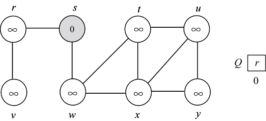
To prove that the BFS tree depends on the ordering within adjacency lists, consider the following two different adjacency lists for the above graph. The difference between these two lists is , t precedes x in adj[w] in first list and x precedes t in adj[w].
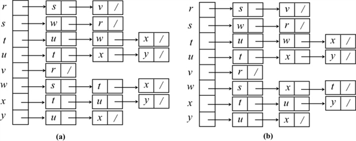
Consider the adjacency list(a) and run BFS tree as follows:
• Initially the queue contains the source vertex s. That is s is visited first.
• Now, the adjacent vertices of s are visited according to order of the adjacency list of s.
• Thus w is visited first and then v is visited next. That is w is enqueued first, then v. Hence, edges (s,w) and (s,v) are added to binary search tree.
• Next, adjacent vertex of w are visited in the order, t, x, respectively. Hence, edges (w,t) and (w,x) are added to binary search tree.
• Now, the adjacent vertex v of r is visited. Hence, the edge (r,v) is added to binary search tree.
• Next adjacent vertex of t, u is visited. Hence the edge (t,u) is added to binary serach tree.
• Next adjacent vertex of x, y, is visited. Hence the edge (x,y) is added to binary search tree.
Now the BFS tree and BFS graph will be as follows:
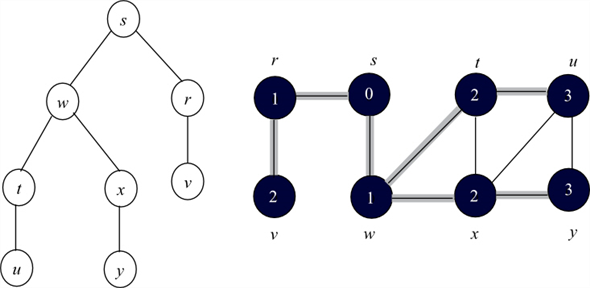
Consider the adjacency list(b) and run BFS tree as follows:
• Initially the queue contains the source vertex s. That is s is visited first.
• Now, the adjacent vertices of s are visited according to order of the adjacency list of s.
• Thus w is visited first and then v is visited next. That is w is enqueued first, then v. Hence, edges (s,w) and (s,v) are added to binary search tree.
•
• Now, the adjacent vertex v of r is visited. Hence, the edge (r,v) is added to binary search tree.
• Next adjacent vertices of x, u and y are visited. Hence the edge (x,u) and (x,y) are added to binary search tree.
Now the BFS tree and BFS graph will be as follows:
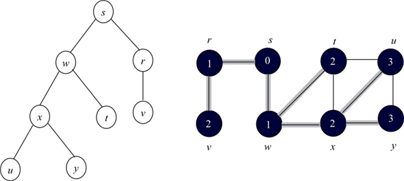
By observing the two binary search trees, it can be concluded that the binary search depended on the order of vertices within adjacency lists.
Consider the following example graph:
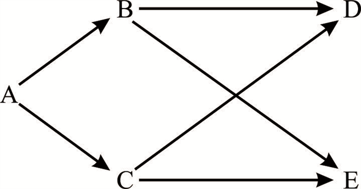
• Now consider the set of tree edges as {AB, AC, BE, CD}
• Now start BFS() algorithm with A as a source. No matter how the vertices are ordered, it will never produce the set of edges which is equals to.
• If non tree edges {BD,CE}are removed from G, then the graph
will be obtained. For each vertex v in V, unique
simple path in  from A to
v is a shortest path in G.
from A to
v is a shortest path in G.
Run BFS on above graph with A as a source vertex and consider that in the adjacency list B comes before C.
• B will be enqueued into the queue.
• After that, C will be enqueued and since all neighbours of A are explored. A will be colored as black.
• Now B will be dequeued and all neighbors of B will be enqueued i.e. E and D, no matter what their orders are in list of B and B will be marked as black since all its neighbors are visited.
• After that, C,E and then D will be marked as black.
After the completion of BFS, the set of edges produced are {AB, AC, BE, BD}. This set is not equals to .
Now consider that, in the adjacency list C comes before B. Then the set of tree edges that are produced will be changed.
• C will be enqueued into the queue and hence dequeued too.
• After that B will be enqueued. Since all neighbours of A are explored, A will be colored as black.
• Now C will be dequeued and then all neighbors of C will be enqueued i.e. E and D, no matter what their orders are in list of C and C will be marked as black, since all its neighbors are visited.
• After that B, E and then D will be marked as black.
After the completion of the BFS, the set of tree edges produced are {AB, AC, CE, CD}. This set is not equals to .
In both cases, no matter what the order is for the vertex in adjacency list, BFS never produces the set of edges .
Computing the diameter of a tree
Consider that be a tree
and is the
shortest distance for any two vertices  of
T. Then the diameter of tree T can be defined as the
longest shortest path distance among all shortest distances in
T. That is diameter (D) of a tree T is
.
of
T. Then the diameter of tree T can be defined as the
longest shortest path distance among all shortest distances in
T. That is diameter (D) of a tree T is
.
Algorithm for computing the diameter ( D ):
• It is known that Breadth First Search (BFS) algorithm computes shortest path distances from a source vertex s to other vertices in the graph.
• Maximum shortest path can be computed by running BFS on every node in the tree and identifying a vertex that is farthest from the source such that the distance is greater than the shortest distance between any two nodes in the tree.
DIAMETER(T)
1 Diameter = 0
2 for each vertex u belongs to T.V
3 Apply BFS(u) and find a node v such that the is the longest shortest path
4 if > Diameter
5 Diameter=
6 return Diameter
The above algorithm runs BFS on all vertices (That is, times) .
Since the BFS runs in time, the
above algorithm runs in .
Efficient algorithm for computing the diameter ( D ):
The above mentioned algorithm finds the diameter of a tree in time. is not a linear time. There is an efficient dynamic programming algorithm that runs linearly, to find diameter of a tree.
• The diameter of a tree may or may not pass through the root of the tree.
• If the root is exist in the path of the diameter, then the depth from the root is the diameter.
• Otherwise, the diameter of the tree will be the diameters of the subtrees. Depths can be calculated easily and diameter of sub trees can be calculated recursively.
Examples:
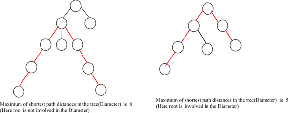
Diameter of a tree can be computed using dynamic programming approach. The following recursive algorithm finds the diameter of a tree:
DIAMETER(y)
1 if y is leaf node
2 return 0
3 maxDiameter=0
4 for each childi of y
5 tempDiameter=DIAMETER(y.child)
6 if tempDiameter > maxDiameter
7 maxDiameter = tempDiameter
8 maxDepth=0
9 for every pair of children (u,v) of y
10 depth=d(y.childi)+d(y.childj)
11 if depth> maxDepth
12 maxDepth =depth
13 maxDepth = maxDepth +2
14 if maxDiameter > maxDepth
15 return maxDepth
16 else
17 return maxDiameter
To calculate the diameter of a tree , call DIAMETER(root).
• In line 1, the above algorithm returns 0 if the node y is a leaf node.
• in lines 4-8, the diameters of sub trees of the tree having y as root node are calculated and maximum diameter is stored in maxDiameter.
• In lines 9-13, the depths of child nodes of y are calculated and maximum depth is stored in maxDepth.
• In lines 14-17, maxium of maxDepth and maxDiameter is returned.
The above algorithm recursively runs on every node of the
tree . In each call, simple decisions and calculations are
computed. Thus, the algorithm runs in the linear time. That is
 .
.
Consider a connected and undirected graph G= (V, E).
The algorithm to compute a path in G that traverses each edge in E exactly once in each direction in O(V+E) time is shown below:
For solving given problem we will use a modified Depth-First-Search algorithm.
• Every edge is marked the first and second time it is traversed with unique marks for each traversal.
• If edges traversed twice then it may not be taken again.
This algorithm should ensure that all edges all explored, and that each edge is taken in both directions.
• To ensure that all edges are explored, the algorithm must ensure that unexplored edges are always taken before edges that are explored once.
• To ensure that edges are taken in each direction, we simply backtrack every time the depth-first search reaches a dead-end.
• The search keeps backtracking until a new unexplored edge is found.
This way, edges are only explored in the reverse direction during the backtracking. This algorithm is based on depth –first-search. Therefore the running time of this algorithm is O(V+ E).